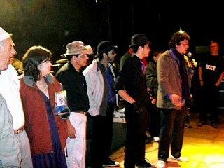
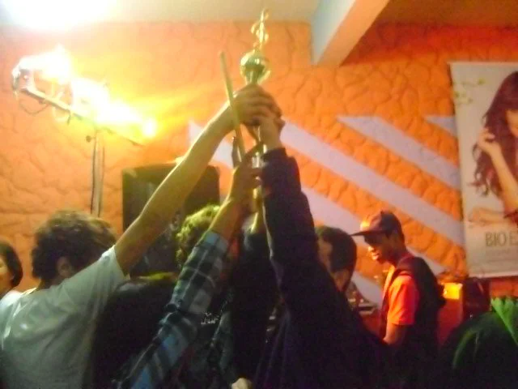
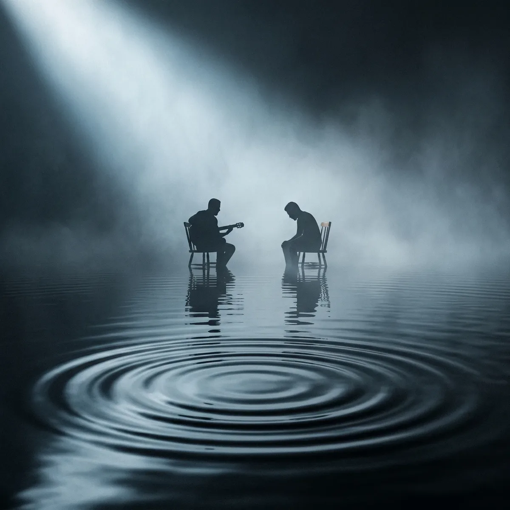

19761º festival
“Casa de Barro”
Flávio do Carmo, de Sete Lagoas, vence o primeiro festival. No ano seguinte, “Maria”, de Edmaire Carvalho, é a primeira campeã da cidade.
1976Foto a encontrar
acervo · alvinópolis · minas gerais
desde 1976 · quarenta edições
em breve · documentário Festival da Canção de Alvinópolis – Histórias – estreia em agosto de 2027 · conheça o filmefotos · vídeos · lembranças de quem subiu ao palco e de quem assistiu da plateia
Flávio do Carmo, de Sete Lagoas, vence o primeiro festival. No ano seguinte, “Maria”, de Edmaire Carvalho, é a primeira campeã da cidade.
O Verde Terra, de Marcos Martino, vence duas vezes pela cidade. Em 1989, um temporal impede a final e o prêmio é dividido entre os dez finalistas.
Eugênio Gomes e Cristina Vale completam três vitórias. De 1997 a 1999 não há festival, por falta de apoio da Prefeitura.
Guitarras, luzes coloridas e fumaça. O prêmio de melhor intérprete vai para “Meu triunfo é o rock n’ roll”.

A final vira maratona, e o resultado só sai às 5h20 da manhã. Babi Jaques e Os Sicilianos, do Recife, tocam num frio de cinco graus e levam o terceiro lugar: “Alvinópolis entrou pra nossa história.”

O ano tem o 1º Pré-Festival. Na noite de MPB, a chuva desaba e todo mundo corre para dentro do Nick's, e um fã paga do próprio bolso um prêmio sorteado para a plateia.

O Djambe vence dois anos seguidos, com “Cativeiro” em 2013 e “Trovão” em 2014.

As canções da cidade se apresentam no Celeiro Bar, e “Encruzilhada” vence. A final do 36º é em 2017.

“No Leito” leva o troféu de 1º lugar geral. Logo depois, a pandemia deixa o festival parado por três anos.

O festival volta depois da pandemia. “Deslumbres”, de Rafael Souza, do Recife, é a campeã, e “Lúgubre” leva Melhor Música de Alvinópolis.

A categoria dedicada às canções da cidade premia “Meandros”.

A quadragésima edição chega meio século depois da primeira.

“Festival da Canção de Alvinópolis – Histórias” será exibido pela primeira vez no próprio festival.
Histórias de palco e de bastidor guardadas por quem acompanhou o festival de perto. Escolha uma faixa, deixe o disco girar e leia o causo como se tivesse saído na primeira página.
33⅓ rpm
Discos gravados por artistas de Alvinópolis que passaram pelos palcos do festival.
Toque no disco para virar e ver a contracapa.
1987 · LP Nós, os loucos, do Verde Terra. Foto da capa: Mauro Sérvulo Gomes, no Solar dos Barcellos, em Alvinópolis.
banda de alvinópolis · anos 1980
Banda clássica de Alvinópolis, o Verde Terra foi campeão do Festival da Canção duas vezes, com canções de Marcos Martino: “Massacre no Solimões”, em 1981, e “Juízo Final”, em 1983.
A contracapa do LP Nós, os loucos conta como tudo começou. Em 1979, o jornalista Fred Ozanam Barcelos era jurado do IV Festival da Canção de Alvinópolis e passou a acompanhar o trabalho de Marcos Martino. “O navegador” foi o primeiro prêmio do compositor, e no ano seguinte ele, aos 17 anos, e o recém-criado Verde Terra saíram para “muitos mares mineiros”.
Em 1987, já baseado em Belo Horizonte e depois de sete anos de estrada, o grupo somava 26 troféus ganhos em festivais. Naquele ano gravou Nós, os loucos, no estúdio Bemol, em BH. Segundo a contracapa, a Censura proibiu a audição pública de uma das faixas, a crônica urbana “Noite de cão”. Nos primeiros festivais, a censura também já tinha cortado letras.
No toca-discos dos campeões: 1981 · 1983
a formação no disco
Participações especiais: José Augusto Silvestre e Eduardo Bittencourt.
Verde Terra: A Criação do Som
Desde 1979, como jurado do IV Festival da Canção de Alvinópolis, que acompanho o trabalho de Marcos Martino. “O navegador”, seu primeiro prêmio, lançaria no ano seguinte este jovem timoneiro (17 anos) e o recém-criado Verde Terra a muitos mares mineiros. Hoje ancorada em Belo Horizonte, após 7 anos de suave e outras vezes turbulenta navegação, a embarcação ostenta em sua galeria 26 grandes troféus — todos conquistados, poética e melodicamente, em disputados festivais.
Nascido em festivais, neles o Verde Terra fez a sua história. Compositor e letrista, Marcos Martino divide com os demais componentes do grupo a criação dos arranjos e a encenação “teatral” que tão bem acondiciona algumas de suas composições.
Mineiramente, todos eles dispensam rótulos. Do rock ao samba de raiz, da valsa estilizada ao bolero, da guarânia progressiva ao “brega”, eles vão fazendo o mapa musical deste País, em meio a paródias de fatos históricos e a críticas sociais.
Tudo isso está muito bem definido nas faixas deste disco. Pena que, à beira do ano 2.000, a Censura — cega e burra, como sempre — ainda se apegue ao “hontem” e proíba a audição pública de uma crônica urbana tão atual e real como a de “Noite de cão”.
Conheça agora, mente e coração ligados, o lirismo, a irreverência e o swing que a música mineira ganhou. Sinta, enfim, a criação-verde (nova) da música-terra (bem brasileira).
Fontes: contracapa do LP Nós, os loucos (Verde Terra, 1987), com texto de Fred Ozanam Barcelos, junho de 1987; lista de vencedores do festival organizada por Marcos Martino; blog Alvinópolis Que Pensa, 23/05/2015. Fotos do disco enviadas por Thales Carvalho. História adaptada para o site.

Correnteza · primeiro álbum de Thales Carvalho e Thayson Azevedo.
dupla de alvinópolis · desde 2007
Thales e Thayson se conheceram em 2007, ainda muito jovens, nas aulas de musicalização de uma banda de instrumentos de sopro de Alvinópolis. A partir de 2009, com outros amigos, formaram o primeiro projeto musical, uma banda de rock, e desde então seguem compondo e tocando juntos.
Parte importante dessa formação aconteceu nos festivais de música autoral. A convivência com compositores, intérpretes e músicos fez desses palcos uma escola para a dupla, que tem participações e premiações em festivais da canção.
Correnteza, o primeiro álbum da dupla, é uma jornada pela força transformadora da natureza e pelos fluxos internos da experiência humana. Celebra o interior de Minas Gerais, onde essa música nasce, e marca o amadurecimento de uma parceria e de uma amizade de mais de quinze anos.
Fonte: site de Thales Carvalho e Thayson Azevedo. História adaptada para o site.
Os campeões passam no disco, um ano de cada vez, de 1976 até hoje. Os anos sem festival também estão lá.
Lista de vencedores organizada por Marcos Martino, do blog Alvinópolis Que Pensa, com acréscimos de Thales Carvalho.
As marcas e os cartazes do festival, pregados com fita crepe. Toque num cartaz para ver de perto.
Cartazes e marcas guardados por Marcos Martino no blog Alvinópolis Que Pensa.
Gravações antigas, reportagens e apresentações, à medida que forem digitalizadas.
Entrevistas com quem fez o festival, fotografias e vídeos de arquivo, histórias engraçadas e personagens que a cidade não esquece.
o festival
Desde 1976, o Festival da Canção reúne compositores de Alvinópolis e de todo o Brasil. Já teve campeões de Sete Lagoas, Ouro Preto, Belo Horizonte, Jundiaí, Recife e da própria cidade.
o acervo
Boa parte dessa história está em álbuns de família, recortes de jornal e fitas VHS. Este site reúne esse material, digitalizado, num só lugar.
o site
O acervo é um projeto cultural independente, sem vínculo com a Prefeitura nem com a organização do festival. Cada foto traz o crédito de quem a cedeu.
Fotos de família, recortes de jornal, cartazes, fitas VHS ou gravações em celular, de qualquer época. Nós digitalizamos e devolvemos o original, e a imagem entra no acervo com o seu nome no crédito.
Enviar material para o acervo